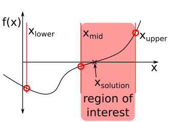

Roots of Nonlinear functions
Contents
Content modified under Creative Commons Attribution license CC-BY 4.0, code under BSD 3-Clause License © 2020 R.C. Cooper
Roots of Nonlinear functions¶
It’s not always possible to analytically solve for a given variable.¶
In the last Module 03, you created an implicit Heun’s method that created the following problem: How can you solve for a value of \(y\), a dependent variable, when the function is a function of \(y\), in an equation format it becomes
\(y=f(y,parameters)\)
where \(parameters\) are known inputs to the equation, but the variable \(y\) is not separable from the function \(f\). You can rewrite the problem as
\(0=y-f(y,parameters).\)
Many times, you may have a deeper problem such as wanting to know when two functions are equal to each other:
\(0 = g(y,parameters) -f(y,parameters)\)
where \(g(y,parameters)\) in the previous equation was \(g(y)=y\).
Getting to the root of a problem¶
This is a very common problem in engineering designs. You may have mathematical models for designs, but you can’t explicitly solve for the variables you can control or see [1].
Freefall example:¶
Consider an observation of an object, with a known shape, so its drag coefficient c=0.25 kg/m. If the object reaches a velocity of 36 m/s after 4 seconds of freefalling, what is its mass?
\(v(t)=\sqrt{\frac{gm}{c_{d}}}\tanh(\sqrt{\frac{gc_{d}}{m}}t)\)
We can plug in the known parameters, \(t=4~s\), \(v=36~m/s\), \(c_d=0.25\) kg/s, and \(g=9.81~m/s^2\), but you cannot separate \(m\) from the \(\tanh\) and \(\sqrt{}\).
\(36 = \sqrt{\frac{9.81m}{0.25}}\tanh(\sqrt{\frac{9.81*0.25}{m}}4)\)
Instead, you can use computational methods to solve the problem by creating a new function f(m) where
\(f(m)=36 - \sqrt{\frac{9.81m}{0.25}}\tanh(\sqrt{\frac{9.81*0.25}{m}}4)\).
When f(m) = 0, you have solved for m in terms of the other variables (e.g. for a given time, velocity, drag coefficient and acceleration due to gravity)
import numpy as np
import matplotlib.pyplot as plt
%matplotlib inline
plt.rcParams.update({'font.size': 22})
plt.rcParams['lines.linewidth'] = 3
g=9.81 # acceleration due to gravity
def f_m(m,v=36,t=4,c_d=0.25,):
''' define a function f(m) that returns
v(t)-sqrt(mg/cd)*tanh(sqrt(gcd/m)*t)
arguments:
---------
m: mass of object
c_d: drag coefficient default=0.25 kg/m # drag coefficient
t: time of velocity measure default=4 seconds
v: velocity measure at time, t default=36 m/s
returns:
--------
f_m: the difference between v(t) and sqrt(mg/cd)*tanh(sqrt(gcd/m)*t)
if f_m ==0, then mass is correctly chosen
'''
f_m = v-np.sqrt(g*m/c_d)*np.tanh(np.sqrt(g*c_d/m)*t)
return f_m
m=np.linspace(60, 200,100); # possible values for mass 50 to 200 kg
plt.plot(m,f_m(m))
plt.plot(m,np.zeros(len(m)))
plt.xlabel('mass, m (kg)')
plt.ylabel('f(m)');
f_m(149)
-0.12322824302261637
The Brute force method is plot f_m vs m and with smaller and smaller steps until f_m ~ 0, but you can do much better.
We will look at two classes of methods, most numerical solutions use a combination of these two types of solvers:
Bracketing methods
Open methods
In Bracketing methods, you choose an upper and lower bound and find the best solution in that range.
In Open methods, you choose an initial guess, then you have a function that brings us closer to the solution with every iteration.
Incremental searching ( a smarter brute force approach)¶
If you consider a range of possible masses, e.g. 50 kg - 200 kg, then you can evaluate your function \(f(m)\) at evenly-spaced intervals and look for x-axis crossings. If the value of \(f(m_{i})\) is positive, and the value of \(f(m_{i+1})\) is negative, then the correct mass is somewhere between \(m_i\) and \(m_{i+1}\).
Take a look at the implementation you have below of the incsearch function.
There are a few key lines to look at:
x = np.linspace(xmin,xmax,ns)
f = func(x)
In these two lines, you are dividing the interval into ns-equally-spaced values (our default is ns=50). Then, you evaluate your function (\(f(m)\)) ns times for each value.
sign_f = np.sign(f)
delta_sign_f = sign_f[1:]-sign_f[0:-1]
i_zeros = np.nonzero(delta_sign_f!=0)
On these three lines, you are looking for sign-changes in the array f. First, you get just the sign of each array value with np.sign. Then, you look at the changes in sign with the difference between f[i] and f[i-1] for i=1…len(f). Finally, you get the indices sign changes by looking for nonzero elements in delta_sign_f.
Discussion¶
Why can’t you just consider cases where delta_sign_f>0? Why do you care about all nonzero sign changes?
def incsearch(func,xmin,xmax,ns=50):
'''incsearch: incremental search root locator
xb = incsearch(func,xmin,xmax,ns):
finds brackets of x that contain sign changes
of a function on an interval
arguments:
---------
func = name of function
xmin, xmax = endpoints of interval
ns = number of subintervals (default = 50)
returns:
---------
xb(k,1) is the lower bound of the kth sign change
xb(k,2) is the upper bound of the kth sign change
If no brackets found, xb = [].'''
x = np.linspace(xmin,xmax,ns)
f = func(x)
sign_f = np.sign(f)
delta_sign_f = sign_f[1:]-sign_f[0:-1]
i_zeros = np.nonzero(delta_sign_f!=0)
nb = len(i_zeros[0])
xb = np.block([[ x[i_zeros[0]+1]],[x[i_zeros[0]] ]] )
if nb==0:
print('no brackets found\n')
print('check interval or increase ns\n')
else:
print('number of brackets: {}\n'.format(nb))
return xb
Test your function¶
To test your incsearch function on a known function, let’s try finding all the times that \(sin(x)\) crosses the x-axis from \(x=-1...7\). Our function should return values at \(x=0,~x=\pi/2,~x=\pi.\)
mn=-1
mx=7
x=np.linspace(mn,mx)
plt.plot(x,np.sin(x))
xb = incsearch(lambda x: np.sin(x),mn,mx,ns=50)
plt.plot(xb,np.sin(xb),'s')
plt.ylabel('$\sin(x)$')
plt.xlabel('x')
plt.title('Upper bounds={:.2f},{:.2f},{:.2f}\nLower bounds={:.2f},{:.2f},{:.2f},'.format(*xb[0,:],*xb[1,:]));
number of brackets: 3
Success - incsearch works¶
You should see that incsearch returns intervals in the correct locations near x=0, x=\(\pi/2\) and x=\(\pi.\) Now, let’s apply it to the freefall problem and discover what mass is necessary to reach 36 m/s at t=4 sec of freefall.
Depending upon what ns you choose, you should see that a mass of 142-143 kg will reach 36 m/s in 4 seconds of freefall.
xb = incsearch(f_m,50,200,ns=100)
print('Upper bound on mass = {:.2f} kg'.format(*xb[0,:]))
print('Lower bound on mass = {:.2f} kg'.format(*xb[1,:]))
number of brackets: 1
Upper bound on mass = 143.94 kg
Lower bound on mass = 142.42 kg
Exercise¶
Use the incsearch function to find the number of times \(cos(x)=0\) in the interval \(x=0...8\).
Plot x-vs-cos(x)
and
plot the values of xb and np.cos(xb) as \(\circ\)-markers ('o')
Bisection method¶
The incsearch function will always return a set of upper and lower bounds on the zeros of a function, but if you want to increase the accuracy of your solutions, you have to calculate \(f(x)\) a lot. The error in the solution is always
\(error = \frac{x_{max}-x_{min}}{ns}\)
We can reduce the number of times you have to evaluate the function with more insight.
Let’s divide interval in half until, then evaluate \(f(x_{max})\), \(f(x_{min})\), and \(\frac{x_{max}+x_{min}}{2}\). Now, you can look for a sign change between these three locations. You focus your attention on the bisected bracket. Look at the figure below that illustrates choosing the region of interest on the right vs left side of the interval.

Let’s use the same interval you started with to illustrate a few steps in the right direction.
\(x_{max}=200\) kg
\(x_{min}=50\) kg
\(x_{mid}=125\) kg
x=np.array([50,125,200])
fx=f_m(x)
print('f(xmin) = {:.2f}, f(xmid) = {:.2f}, f(xmax)={:.2f}'.format(*fx))
f(xmin) = 4.58, f(xmid) = 0.41, f(xmax)=-0.86
Now, you have reduced your region of interest to just 125-200 kg.
Exercise¶
Divide the region 125-200 kg into two, and repeat the above step. Is the solution in the upper (163-200 kg)? or lower (125-163 kg) region? What are the values of f_m(m)?
Bisect Function¶
We can automate this process with a bisect function. Its a much better root locator because you can reduce the error without evaluating the function a lot of times [1, 2].
Note the use of the function break:
We can use an if-statement to check a condition and break the loop if that condition is met. These break statements are often used in while-loops so that you can have some stopping criteria. In your case, you use the specified error, es, as a stopping criteria. If your relative error,
\(e_{relative} = \frac{|x_{new}-x_{old}|}{x_{new}}\)
is less than your specified error, the loop is broken and the number of iterations halts at that point.
Discussion¶
What is another stopping criteria that you could use?
def bisect(func,xl,xu,es=0.0001,maxit=50):
'''bisect: root location zeroes
root,fx,ea,iter=bisect(func,xl,xu,es,maxit,p1,p2,...):
uses bisection method to find the root of func
arguments:
------
func = name of function
xl, xu = lower and upper guesses
es = desired relative error (default = 0.0001 )
maxit = maximum allowable iterations (default = 50)
p1,p2,... = additional parameters used by func
returns:
-------
root = real root
and a list of [fx, ea, iter]
fx = function value at root
ea = approximate relative error ( )
iter = number of iterations'''
xr = xl
ea = 100
for iter in range(0,maxit):
xrold = xr
xr = (xl + xu)/2
if xr != 0:
ea = abs((xr - xrold)/xr) * 100
else:
ea = abs((xr - xrold)/1) * 100
test = func(xl)*func(xr)
if test < 0:
xu = xr;
elif test > 0:
xl = xr;
else:
ea = 0;
if ea <= es:
break
root = xr
fx = func(xr);
return root,[fx,ea,iter]
Mass_at_36ms,out=bisect(f_m,50,200)
print('The best estimate for the mass is {} kg'.format(Mass_at_36ms))
print('We reached a relative error of {} with {} iterations'.format(out[1],out[2]))
The best estimate for the mass is 142.73769855499268 kg
We reached a relative error of 5.0109798921069224e-05 with 20 iterations
Recursive functions¶
The bisection function and the next two open root solvers (newtraph and modsecant) make use of a recursive function.
Definition:
recursive: for a definition of recursive, see recursive.
Recursive functions work by updating an initial assignment each time the function is called. In the bisection method, the initial solution is assumed to be halfway between the upper and lower bound
\(x_{r} = \frac{x_u+x_l}{2},\)
but once the upper or lower bound is updated, the value of \(x_r\) is updated as well. This is why the first step in the loop is to temporarily save \(x_r\) as xrold. With the xrold variable, you can track the progress of your solution.
Newton-Raphson: Open method¶
Bracketing methods are great, but they are burdened by slow convergence rates. In the bisection method, you reduce your error by 50% with each region of interest selection, but this is rather slow.
One of the fastest root-finding methods is the Newton-Raphson method, it is an open method so it does not require an upper- and lower-bound [1,2].
The Newton-Raphson works by creating a Taylor series expansion around your initial guess of the function,
\(f(x_{0}+\Delta x) = f(x_{0}) +\frac{df}{dx}\Delta x +...\)
We want to determine what step, \(\Delta x\), to take in order for \(f(x_{0}+\Delta x)=0\). So you set your right hand side to 0 and ignore the \(...\) -higher order terms.
\(0 = f(x_{0}) +\frac{df}{dx}\Delta x\)
So your best guess for a solution is then
\(x_{solution} = x_{0}+ \Delta x\)
where
\(\Delta x = -f(x) \left({\frac{df}{dx}}\right)^{-1}.\)
Newton-Raphson example¶
Let’s use the Newton-Raphson method to solve an engineering problem. Consider a spherical tank of water that can be filled to a height, \(h\), and has radius, \(R\).
The volume of water, \(V\), in the tank is
\(V= \pi h^2\frac{3R-h}{3}.\)
If your tank has a radius of \(R=2~m\) and you need a volume of 29 \(m^3\), what height should you fill it to?
To answer this question with the Newton-Raphson method, you first define a new function, \(f(h,parameters)\)
\(f(h,parameters) = V-\pi h^2\frac{3R-h}{3}.\)
Now you can plug in your known parameters
\(f(h) = 29-\pi h^2\frac{6-h}{3},\)
and calculate the derivative,
\(\frac{d}{dh}(f(h)) = -\pi \frac{12h-3h^2}{3}\)
def f_h(h,V=29,R=2):
return V-np.pi*h**2*(3*R-h)/3
def dfdh(h,V=29,R=2):
return -np.pi*(6*R*h-3*h**2)/3
We can use the definitions of f_h and dfdh to calculate the height, \(h\) to fill the tank.
xguess = 2
deltax = -f_h(xguess)/dfdh(xguess)
print(xguess+deltax)
2.974413341499149
Discussion¶
Try changing the value of xguess. Is there any way to choose the best xguess value? Are there any xguess values that return an Python error? Why?
Create a Newton-Raphson function¶
In the same way that you created bracketing method functions, you can create the Newton-Raphson method function to update your xguess until a desired tolerance is achieved.
def newtraph(func,dfunc,x0,es=0.0001,maxit=50):
'''newtraph: Newton-Raphson root location zeroes
root,[ea,iter]=newtraph(func,dfunc,x0,es,maxit,p1,p2,...):
uses Newton-Raphson method to find the root of func
arguments:
----------
func = name of function
dfunc = name of derivative of function
x0 = initial guess
es = desired relative error (default = 0.0001 )
maxit = maximum allowable iterations (default = 50)
returns:
----------
root = real root
ea = approximate relative error (%)
iter = number of iterations'''
xr = x0
ea=1
for iter in range(1,maxit):
xrold = xr
dx = -func(xr)/dfunc(xr)
xr = xrold+dx
if xr!=0:
ea= np.abs((xr-xrold)/xr)*100 # relative error in %
if ea < es:
break
return xr,[func(xr),ea,iter]
hr, out = newtraph(f_h,dfdh,1)
print(hr)
3.0791382579723865
Compare techniques¶
Let’s compare the relative error in finding the height, \(h\), in the previous example as a function of the number of iterations in the bisection (bisect) method and the Newton-Raphson (newtraph).
What you should see is that as you increase the number of iterations, the relative error decreases. You can compare the rate that the error decreases, \(\frac{\Delta error}{\# iterations},\) for your two root locators.
We are going to set the maximum iterations, maxit=n[i], to the desired value in the loop, but you want as low of an error as possible. You set your specified error to es=0.
n=np.arange(3,30)
err_bisect = np.zeros(len(n))
err_newtraph=np.zeros(len(n))
for i in range(0,len(n)):
root,out = bisect(f_h,0,4,es=0,maxit=n[i])
err_bisect[i] = out[1]
root,out = newtraph(f_h,dfdh,1,es=0,maxit=n[i])
err_newtraph[i] =out[1]
plt.semilogy(n,err_bisect,label = 'bisection')
plt.semilogy(n,err_newtraph, label = 'Newton-Raphson')
plt.xlabel('number of iterations')
plt.ylabel('relative error (%)')
plt.legend(loc='center left', bbox_to_anchor=(1, 0.5));
Discussion¶
There is a drastic difference between the bisection function and the newtraph function. How many iterations are necessary for the bisection method to reach an error of \(10^{-3}\) %? How many iterations are necessary for the Newton-Raphson method to reach an error of \(10^{-3}\) %?
Are there any benefits to the bisection method? When would the Newton-Raphson method not work? or not be appropriate?
Secant Methods¶
The key to the Newton-Raphson method is its evaluation of the derivative of the function, but you can’t always evaluate the derivative. Many numerical functions, such as the solution to differential equations that you worked on in notebooks 01, 02, and 03 do not have analytical derivatives. Instead, you will approximate the derivative with a modified secant method.
Approximation of derivative:
\(f'(x) \approx \frac{f(x+\delta x)-f(x)}{\delta x}\)
Modified Secant method¶
Change the x evaluations to a perturbation \(\delta\) [1,2].
\(x_{i+1}=x_{i}-\frac{f(x_{i})(\delta x_{i})}{f(x_{i}+\delta x_{i})-f(x_{i})}\)
def mod_secant(func,dx,x0,es=0.0001,maxit=50):
'''mod_secant: Modified secant root location zeroes
root,[fx,ea,iter]=mod_secant(func,dfunc,xr,es,maxit,p1,p2,...):
uses modified secant method to find the root of func
arguments:
----------
func = name of function
dx = perturbation fraction
xr = initial guess
es = desired relative error (default = 0.0001 )
maxit = maximum allowable iterations (default = 50)
p1,p2,... = additional parameters used by function
returns:
--------
root = real root
fx = func evaluated at root
ea = approximate relative error ( )
iter = number of iterations'''
iter = 0;
xr=x0
for iter in range(0,maxit):
xrold = xr;
dfunc=(func(xr+dx)-func(xr))/dx;
xr = xr - func(xr)/dfunc;
if xr != 0:
ea = abs((xr - xrold)/xr) * 100;
else:
ea = abs((xr - xrold)/1) * 100;
if ea <= es:
break
return xr,[func(xr),ea,iter]
n=np.arange(3,30)
err_bisect = np.zeros(len(n))
err_newtraph=np.zeros(len(n))
err_modsec=np.zeros(len(n))
for i in range(0,len(n)):
root,out = bisect(f_h,0,4,es=0,maxit=n[i])
err_bisect[i] = out[1]
root,out = newtraph(f_h,dfdh,1,es=0,maxit=n[i])
err_newtraph[i] =out[1]
root,out = mod_secant(f_h,0.001,1,es=0,maxit=n[i])
err_modsec[i] =out[1]
plt.semilogy(n,err_bisect,label = 'bisection')
plt.semilogy(n,err_newtraph, label = 'Newton-Raphson')
plt.semilogy(n,err_modsec, label = 'modified secant')
plt.title('Convergence rates of solvers')
plt.xlabel('number of iterations')
plt.ylabel('relative error (%)')
plt.legend(loc='center left', bbox_to_anchor=(1, 0.5));
The modified secant can converge as quick as the Newton-Raphson method, but there is no universal \(\delta x\) that works well for every problem. Typically, it is set as a small number and then varied based upon the conergence rate for the problem.
Shooting method¶
Now, you have multiple solving methods to revisit your Initial Value Problems. In notebooks 01 and 02 you measured the displacement of a ball as a function of time. You assumed the initial velocity was 0 in the case of the dropped object, or you approximated the velocity based upon the first two measured displacements and a finite difference approximation.
Consider the case of the tennis ball that was dropped in the ‘data/fallingtennisball02.txt file’. After it strikes the ground, you don’t really know the velocity. What you do know is that the position was \(\approx 0\) at t=0.58 s and it was \(\approx 0\) m at t=1.43 s. Solving your differential equation without an initial velocity is known as a “shooting” method.

Solving this type of problem where the boundaries are known is referred to as a Boundary value problem. Typically, boudary value problems happen over a distance, rather than points in time, but you will come back to those in the fifth module on boundary value problems.
For now, let’s reframe your engineering problem into a root-finding problem. You have a length of time of interest:
t=0.58 - 1.43 sec
in this time, the ball had just struck the ground and is traveling upwards. What is the initial velocity necessary to keep it in the air for \(\Delta t = 0.85~s\) ?
We know that the ball is acted upon by gravity and the force of drag, but you do not an analytical solution for the position as a function of time. First, let’s look at the data you have.
filename = '../data/fallingtennisball02.txt'
t, y = np.loadtxt(filename, usecols=[0,1], unpack=True)
tbounce = t[580:1425]
ybounce = y[580:1425]
print('at time t={:.2f} s, y={:.4f} m'.format(tbounce[0],ybounce[0]))
print('at time t={:.2f} s, y={:.4f} m'.format(tbounce[-1],ybounce[-1]))
plt.plot(t,y)
plt.plot(tbounce,ybounce,'s',label='after bounce 1')
plt.legend()
plt.title('Time between bounce 1 and 2')
plt.xlabel('time (s)')
plt.ylabel('height y(t) (m)');
at time t=0.58 s, y=-0.0152 m
at time t=1.42 s, y=-0.0110 m
Now, let’s look at the fall_drag function you created that described the motion of the tennis ball. Remember, this function returns the derivative of the state. So if you input
state = \([x,~v]\)
it will return
d(state)/dt = \(\left[v,~-9.81+\frac{F_{D}}{m}\right]\)
def fall_drag(state,C_d=0.47,m=0.0577,R = 0.0661/2):
'''Computes the right-hand side of the differential equation
for the fall of a ball, with drag, in SI units.
Arguments
----------
state : array of two dependent variables [y v]^T
m : mass in kilograms default set to 0.0577 kg
C_d : drag coefficient for a sphere default set to 0.47 (no units)
R : radius of ball default in meters is 0.0661/2 m (tennis ball)
Returns
-------
derivs: array of two derivatives [v (-g+a_drag)]^T
'''
rho = 1.22 # air density kg/m^3
pi = np.pi
a_drag = -1/(2*m) * pi * R**2 * rho * C_d * (state[1])**2*np.sign(state[1])
derivs = np.array([state[1], -9.81 + a_drag])
return derivs
To get the position as a function of time, you can use any of the integration methods that you defined in 03_Get_Oscillations. Here you copy in the second-order Runge-Kutta explicit method.
def rk2_step(state, rhs, dt):
'''Update a state to the next time increment using modified Euler's method.
Arguments
---------
state : array of dependent variables
rhs : function that computes the RHS of the DiffEq
dt : float, time increment
Returns
-------
next_state : array, updated after one time increment'''
mid_state = state + rhs(state) * dt*0.5
next_state = state + rhs(mid_state)*dt
return next_state
Defining your problem for Python¶
Now, you can finally ask your engineering question in a Python way.
We need a function, \(f(v_0)\), such that when you input the correct velocity for the initial condition, \(f(v_0^{correct})=0\)
So you define a new function with def
def f_v(v0,y0=ybounce[0],yT=ybounce[-1],T=(tbounce[0],tbounce[-1]),N=50):
''' define a function f(v) that returns
ymeasured(T)-ypredicted(T)
here, the time span is based upon the tbounce variable defined above from
the first bounce to the second bounce
arguments:
---------
v0: the unknown initial vy velocity component
y0: the known initial position
yT: the known final position
T: a list of two times (beginning time, end time)
N: the number of time steps to integrate the RK2 method default = 50
returns:
--------
error: the difference between vmeasured(T) and vpredicted(T)
when f_v(v0)= 0, the correct initial velocity was chosen
'''
# initialize array
t_sol=np.linspace(T[0],T[1],N)
dt=t_sol[1]-t_sol[0]
num_sol_drag = np.zeros([N,2])
# Set intial conditions
num_sol_drag[0,0] = y0
num_sol_drag[0,1] = v0
for i in range(N-1):
num_sol_drag[i+1] = rk2_step(num_sol_drag[i], fall_drag, dt)
error = num_sol_drag[-1,0]-yT
#plt.plot(t_sol,num_sol_drag[:,0])
return error
Take a look at the pieces of this function:
Create an array of time
t_solSet initial conditions to
y0andv0<- herev0is your unknown valueUse Runge-Kutta second order to integrate the function for
t_sol[0]tot_sol[-1]Create an output,
errorof the difference between the measured y(T),yT, and the current solution for y(T),num_sol_drag[-1,0]
When error is 0, you have chosen the correct initial velocity, v0.
To see what the output looks like, below you can take out the integration part and plot the results for a guess of v0.
# initialize array
N=50
T=(tbounce[0],tbounce[-1])
t_sol=np.linspace(T[0],T[1],N)
dt=t_sol[1]-t_sol[0]
num_sol_drag = np.zeros([N,2])
num_sol_drag[0,0] = ybounce[0]
num_sol_drag[0,1] = 3
for i in range(N-1):
num_sol_drag[i+1] = rk2_step(num_sol_drag[i], fall_drag, dt)
plt.plot(t,y)
plt.plot(t_sol,num_sol_drag[:,0],'s')
plt.title('Predicted motion after bounce')
plt.xlabel('time (s)')
plt.ylabel('height y(t) (m)');
Exercise¶
Enter your best guess for v0. What is the error between the measured yT and your predicted y(T)? Hint: use your function, f_v, and plot the results.
Solving the engineering problem¶
Now, you have all the components you need for this “shooting” problem. You can’t evaluate a derivative easily and the bisection method is too slow. Therefore, you will use the mod_secant function to find the correct initial velocity.
Below is the solution. Just one line of code!
v0,out = mod_secant(f_v,0.0001,7,es=0.000001) # <-- solution line
print(v0, 'm/s is the correct initial velocity to match the height at beginning and end of bounce')
print('the solve took ',out[2],' iterations')
4.175915400675785 m/s is the correct initial velocity to match the height at beginning and end of bounce
the solve took 3 iterations
Exercise¶
Change the value of the dx and x0. Does it change the final result? Does it change the time it took to arrive at the solution or the number of iterations?
mod_secant?
What you’ve learned¶
How to find the 0 of a function, aka root-finding
The difference between a bracketing and an open methods for finding roots
Two bracketing methods: incremental search and bisection methods
Two open methods: Newton-Raphson and modified secant methods
How to measure relative error
How to compare root-finding methods
How to frame an engineering problem as a root-finding problem
Solve an initial value problem with missing initial conditions (the shooting method)
Bonus: In the Problems you’ll consider stability of bracketing and open methods.
References¶
Chapra, Steven Applied Numerical Methods with Matlab for Engineers. McGraw Hill.
Computational Physics with Python, lecture notes by Eric Ayars, California State University, Chico. Available online on the author’s website: https://physics.csuchico.edu/ayars/312/handouts/comp-phys-python.pdf